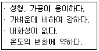
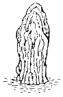
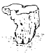
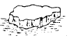
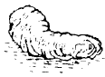
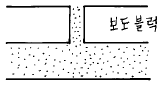

조경기능사 (2003-01-26 기출문제)
1과목: 조경일반
1. 다음 중 사대부나 양반 계급에 속했던 사람이 자연속에 묻혀 야인으로서의 생활을 즐기던 별서 정원이 아닌 것은?
- 소쇄원
- 방화수류정
- 부용동정원
- 다산정원
(정답률: 81%)

2. 다음 중 신선사상의 영향을 받은 정원은 어느 것인가?
- 일본의 고산수 정원
- 신라의 안압지
- 조선의 경복궁
- 조선의 경회루
(정답률: 82%)
3. 조경의 효과라고 볼 수 없는 것은?
- 인간의 안식처로서의 구실을 하게 된다.
- 고층 빌딩이 많이 건립되어 도시화가 촉진된다.
- 살기 좋고 위생적인 주거환경이 된다.
- 주택은 충분한 햇빛과 통풍을 얻을 수 있게 된다.
(정답률: 91%)
4. 좁은 의미의 조경계획이라 볼 수 없는 것은?
- 목표 설정
- 자료 분석
- 기본 계획
- 기본 설계
(정답률: 61%)
5. 서양의 정원 양식의 발달 순서가 맞게 나열된 것은?
- 노단건축식-르노트르식-자연풍경식-근대건축식
- 근대건축식-노단건축식-르노트르식-자연풍경식
- 르노트르식-노단건축식-자연풍경식-근대건축식
- 노단건축식-근대건축식-르노트르식-자연풍경식
(정답률: 66%)
6. 조선시대에 각 도의 관찰사나 부윤 목사들이 산자 수명한 경승지에 많은 누각을 세워 자연을 감상하곤 하였는데 이는 오늘날 어느 공원의 유형과 같다고 볼 수 있는가?
- 근린공원
- 체육공원
- 자연공원
- 종합공원
(정답률: 75%)
7. 스페인의 파티오(patio) 에서 가장 중요한 구성요소는?
- 물
- 원색의 꽃
- 색채 타일
- 짙은 녹음
(정답률: 70%)
8. 대비의 미가 나타나는 것은?
- 아아치를 가진 주랑(柱廊)
- 재료의 관계가 점차적으로 감소되는 것
- 소나무의 푸른 수관을 배경으로 한 분홍색의 벚꽃
- 재료가 계속 균등하게 배치된 상태
(정답률: 77%)
9. 따뜻한 색 계통이 주는 감정에 해당되지 않는 것은?
- 전진해 보인다.
- 정열적이거나 온화하다.
- 상쾌한 느낌을 준다.
- 친근한 느낌을 준다.
(정답률: 66%)
10. 레크리에이션 계획에 있어 일반 대중이 여가시간에 언제, 어디에서, 무엇을 하는가를 상세하게 파악하여 그들의 행동 패턴에 맞추어 계획하는 방법은?
- 자원접근방법(resource approach)
- 활동접근방법(activity approach)
- 경제접근방법(economic approach)
- 행태접근방법(behavioral approach)
(정답률: 61%)
11. 주택의 정원내에서 가장 중요한 공간으로서 휴식과 단란이 이루어지는 공간과 가장 관련이 깊은 것은?
- 앞뜰(前庭)
- 안뜰(主庭)
- 뒤뜰(後庭)
- 작업뜰(作業庭)
(정답률: 82%)
12. 옥상정원에서 식물을 심을 자리는 전체면적의 얼마를 넘지 않도록 하는 것이 좋은가?
- 1/2
- 1/3
- 1/4
- 1/5
(정답률: 74%)
13. 일본정원과 관련이 적은 것은?
- 축소 지향적
- 인공적 기교
- 대비의 미
- 추상적 구성
(정답률: 83%)
14. 다음 조경 계획 과정 가운데 가장 먼저 해야 하는 것은?
- 기본 설계
- 기본 계획
- 실시 설계
- 자연환경 분석
(정답률: 79%)
15. 도시공원 가운데 그 규모가 가장 작은 것은?
- 묘지공원
- 체육공원
- 근린공원
- 어린이공원
(정답률: 84%)
2과목: 조경재료
16. 다음 설명 중 맞는 것은 어느 것인가?
- 지표로 부터 줄기 끝가지의 높이를 수고라고 하고 도장지까지 포함한다.
- 지표로 부터 줄기 끝가지의 높이를 수고라고 하고 도장지는 2/3까지만 포함한다.
- 지표로 부터 줄기 끝가지의 높이를 수고라고 하고 도장지는 1/2까지만 포함한다.
- 지표로 부터 줄기 끝가지의 높이를 수고라고 하고 도장지는 포함하지 않는다.
(정답률: 68%)
17. 임해공업단지의 조경용 수종으로 적합한 것은?
- 소나무
- 목련
- 사철나무
- 왕벚나무
(정답률: 75%)
18. 활엽수이지만 잎의 형태가 침엽수와 같아서 조경적으로 침엽수로 이용하는 것은?
- 은행나무
- 철쭉
- 위성류
- 배롱나무
(정답률: 66%)
19. 바닥포장용 석재로 가장 우수한 것은?
- 화강암
- 안산암
- 대리석
- 석회암
(정답률: 66%)
20. 목재의 인장강도와 압축강도에 대한 설명으로 가장 적당한 것은?
- 압축강도가 더 크다.
- 인장강도가 더 크다.
- 두개의 강도가 동일하다.
- 휨강도와 두개의 강도가 모두 동일하다.
(정답률: 65%)
21. 다음과 같은 특징을 가진 것은?

- 목질재료
- 플라스틱제품
- 금속재료
- 흙
(정답률: 85%)
22. 우리나라에서 사용하고 있는 표준형 벽돌규격은?
- 200㎜ × 100㎜ × 50mm
- 150㎜ × 100㎜ × 50mm
- 210㎜ × 90㎜ × 50mm
- 190㎜ × 90㎜ × 57mm
(정답률: 90%)
23. 음지에서 견디는 힘이 강한 수목으로 짝지은 것은?
- 소나무, 향나무
- 회양목, 눈주목
- 태산목, 가중나무
- 자작나무, 느티나무
(정답률: 74%)
24. 다음 중 덩굴성 수종은?
- 서향
- 송악
- 은행나무
- 피라칸타
(정답률: 85%)
25. 서양잔디의 설명으로 틀린 것은?
- 그늘에서도 견디는 성질이 있다.
- 주로 뗏장 붙이기에 의해 시공한다.
- 일반적으로 겨울철에 상록이다.
- 자주 깎아 주어야 한다.
(정답률: 73%)
26. 알뿌리가 아닌 것은?
- 튜울립
- 수선화
- 칸나
- 스위트 앨리섬
(정답률: 76%)
27. 다음 중 콘크리이트 제품은 어느 것인가?
- 보도블럭
- 타일
- 적벽돌
- 오지토관
(정답률: 77%)
28. 자연석을 모양으로 볼 때 사석은?




(정답률: 78%)
29. 도료(塗料) 중 바니쉬와 페인트의 근본적인 차이점은?
- 안료(顔料)
- 건조과정
- 용도
- 도장방법
(정답률: 72%)
30. 일년 내내 푸른 잎을 달고 있으며 잎이 바늘처럼 뾰족한 나무를 무엇이라 하는가?
- 상록활엽수
- 상록침엽수
- 낙엽활엽수
- 낙엽침엽수
(정답률: 91%)
31. 여름의 연보라 꽃과 초록의 잎 그리고 가을에 검은 열매를 감상하기 위한 지피식물은?
- 맥문동
- 꽃잔디
- 영산홍
- 칡
(정답률: 87%)
32. 섬유재에 관한 설명 중 틀린 것은?
- 볏짚은 줄기를 감싸 해충의 잠복소를 만드는데 쓰인다.
- 새끼줄은 뿌리분이 깨지지 않도록 감는데 사용한다.
- 밧줄은 마 섬유로 만든 마 로프가 많이 쓰인다.
- 새끼줄은 5타래를 1속이라 한다.
(정답률: 79%)
33. 수목 이식 후에 수간보호용 자재로 부피가 가장 적고 운반이 용이하며 도시 미관 조성에 가장 적합한 재료는?
- 짚
- 새끼
- 거적
- 녹화마대
(정답률: 84%)
34. 시멘트 중 간단한 구조물에 가장 많이 사용되는 것은?
- 보통 포틀랜드 시멘트
- 중용열 포틀랜드 시멘트
- 조강 포틀랜드 시멘트
- 저열 포틀랜드 시멘트
(정답률: 87%)
35. 형상수로 이용할 수 있는 나무는?
- 주목
- 명자나무
- 단풍나무
- 소나무
(정답률: 89%)
3과목: 조경 시공 및 관리
36. 곁눈 밑에 상처를 내어 놓으면 잎에서 만들어진 동화물질이 축적되어 잎눈이 꽃눈으로 변하는 일이 많다. 어떤 이유 때문인가?
- C/N 율이 낮아지므로
- C/N 율이 높아지므로
- T/R 율이 낮아지므로
- T/R 율이 높아지므로
(정답률: 73%)
37. 수목의 전정에 관한 다음 사항 중 틀린 것은?
- 가로수의 밑가지는 2m 이상 되는 곳에서 나오도록 한다.
- 이식 후 활착을 위한 전정은 본래의 수형이 파괴되지 않도록 한다.
- 춘계전정(4 - 5월)시 진달래, 목련 등의 화목류는 개화가 끝난 후에 하는 것이 좋다.
- 하계전정(6 - 8월)은 수목의 생장이 왕성한 때이므로 강전정을 해도 나무가 상하지 않아서 좋다.
(정답률: 82%)
38. 콘크리트 미끄럼대를 시공할 경우 일반적으로 지표와 미끄럼면이 이루는 각도는 어느 정도가 가장 적당한가?
- 70°
- 55°
- 45°
- 35°
(정답률: 74%)
39. 상록수 나무를 옮겨심기 위하여 나무를 캐올릴 때 뿌리분의 지름은 얼마로 하는가?
- 근원지름의 1/2배
- 근원지름의 1배
- 근원지름의 4배
- 근원지름의 6배
(정답률: 84%)
40. 옹벽시공시 뒷면에 물이 고이지 않도록 몇 ㎡마다 배수구 1개씩 설치하는 것이 좋은가?
- 1 ㎡
- 3 ㎡
- 5 ㎡
- 7 ㎡
(정답률: 70%)
41. 식재할 경우 수간감기(wrapping)를 하는 이유 중 틀린 것은?
- 수간으로부터 수분 증산 억제
- 잡초 발생 방지
- 병해충 방지
- 상해(霜害)방지
(정답률: 76%)
42. 다음 중 인공적 수형을 만드는데 적합하지 않은 나무를 설명한 것은?
- 자주 다듬어도 자라는 힘이 쇠약해지지 않는 나무일 것
- 병이나 벌레에 견디는 힘이 강한 나무일 것
- 되도록 잎이 작고 양이 많은 나무일 것
- 다듬어 줄 때마다 잔가지와 잎보다는 굵은 가지가 잘 자라는 나무일 것
(정답률: 77%)
43. 수목의 수간주입 방법 중 틀린 것은?
- 약액의 수간 주입은 수액 이동이 활발한 5월초 - 9월말에 한다.
- 흐린 날 실시해야 약액의 주입이 빠르다.
- 수간 주입기를 사람 키 높이 되는 곳에 끈으로 매단다.
- 약통 속에 약액이 다 없어지면, 수간 주입기를 걷어 내고 도포제를 바른 다음, 코르크 마개로 주입구멍을 막아준다.
(정답률: 84%)
44. 잔디의 뗏밥넣기에 관한 설명 중 가장 옳지 못한 것은?
- 뗏밥은 가는 모래 2, 밭흙 1, 유기물 약간을 섞어 사용한다.
- 뗏밥은 일반적으로 가열하여 사용하며, 증기소독, 화학약품 소독을 하기도 한다.
- 뗏밥은 한지형 잔디의 경우 봄, 가을에 주고 난지형 잔디의 경우 생육이 왕성한 6-8월에 주는 것이 좋다.
- 뗏밥의 두께는 15㎜ 정도로 주고, 다시 줄 때에는 일주일이 지난 후에 주어야 좋다.
(정답률: 59%)
45. 큰 나무의 뿌리돌림에 대한 설명이다. 설명이 옳지 못한 것은?
- 굵은 뿌리를 3 - 4 개정도 남겨둔다.
- 굵은 뿌리 절단시는 톱으로 깨끗이 절단한다.
- 뿌리 돌림을 한후에 새끼로 뿌리분을 감아두면 뿌리의 부패를 촉진하여 좋지 않다.
- 뿌리 돌림을 하기전 지주목을 설치하여 작업하는 것이 좋다.
(정답률: 83%)
46. 속효성 비료로 계속 주면 흙이 산성으로 변하는 비료는?
- 황산암모늄
- 요소
- 황산칼륨
- 중과석
(정답률: 63%)
47. 다음 조경수 가운데 자연적인 수형이 구형인 것은?
- 배롱나무
- 백합나무
- 회화나무
- 은행나무
(정답률: 50%)
48. 들잔디(평떼)의 일반적인 뗏장 규격은?
- 10cm × 10cm
- 20cm × 20cm
- 30cm × 30cm
- 40cm × 40cm
(정답률: 83%)
49. 보도블럭 포장공사의 단면을 보인 그림이다. 블럭 아랫 부분은 무엇으로 채우는 것이 좋은가?

- 모래
- 자갈
- 콘크리이트
- 잡석
(정답률: 86%)
50. 거실이나 응접실 또는 식당앞에 건물과 잇대어서 만드는 시설물은?
- 정자
- 테라스
- 데코
- 트렐리스
(정답률: 88%)
51. 수목 식재 후의 관리사항으로서 필요 없는 것은?
- 전정
- 뿌리돌림
- 가지치기
- 시비
(정답률: 82%)
52. 자연식 배식법의 설명이다. 틀리는 것은?
- 정원안에 자연 그대로의 숲의 생김새를 재생시키고자 하는 수법이다.
- 나무의 위치를 정할 때에는 장래 어떠한 관계에 놓일 것인가를 예측하면서 배치한다.
- 여러 그루의 나무가 하나의 직선 위에 줄지어 서게되는 것은 절대로 피해야 한다.
- 공원과 같은 넓은 녹지에 집단미를 나타낼 경우 여러가지 수종을 밀식하여 빽빽하게 하는 것이 좋다.
(정답률: 77%)
53. 다음 중 조경시공의 특성이 아닌 것은?
- 생명력이 있는 식물재료를 많이 사용한다.
- 시설물은 미적이고 기능적이며 안전성과 편의성 등이 요구된다.
- 조경수목은 정형화된 규격표시가 있기 때문에 모양이 다른 나무들은 현장 검수에서 문제의 소지가 있다.
- 조경수목의 단가 적용은 정형화된 규격에 의해서 시행되고 있으며 수목의 조건에 따라 단가 및 품셈을 증감하여 사용하고 있다.
(정답률: 49%)
54. 거푸집을 가장 늦게 떼어 내어야 할 곳은?
- 측면
- 기둥류
- 슬랩 밑면
- 보.아아치
(정답률: 58%)
55. 추운 지방이나 겨울철에 콘크리트가 빨리 굳어지도록 무엇을 섞어 쓰는가?
- 석회
- 염화칼슘
- 붕사
- 마그네슘
(정답률: 81%)
56. 고속도로 중앙분리대 식재에서 차광율이 가장 높은 나무는?
- 느티나무
- 협죽도
- 동백나무
- 향나무
(정답률: 53%)
57. 광질(光質)의 특성때문에 안개지역 조명,도로 조명, 터널 조명 등에 적합한 전등은?
- 할로겐등
- 형광등
- 수은등
- 나트륨등
(정답률: 73%)
58. 설계도상의 부정형 지역의 면적측정시 사용되는 기구는 다음 중 어느 것인가?
- 핸드 레벨
- 만능자
- 플래니미터
- 곡선자
(정답률: 73%)
59. 축척 1/50 도면에서 도상(圖上)에 가로 6 cm 세로 8 cm 길이로 표시된 연못의 실지 면적은 얼마인가?
- 12 m2
- 24 m2
- 36 m2
- 48 m2
(정답률: 51%)
60. 조경용 수목의 할증율은 얼마로 하는가?
- 3%
- 5%
- 10%
- 20%
(정답률: 82%)